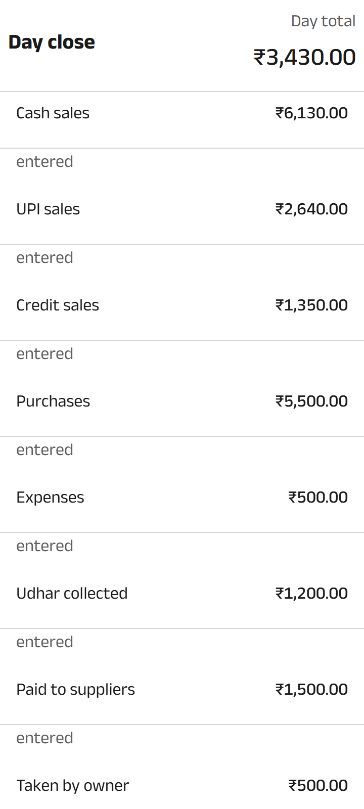
T5 Day close list - canonical shop, English, Comfort
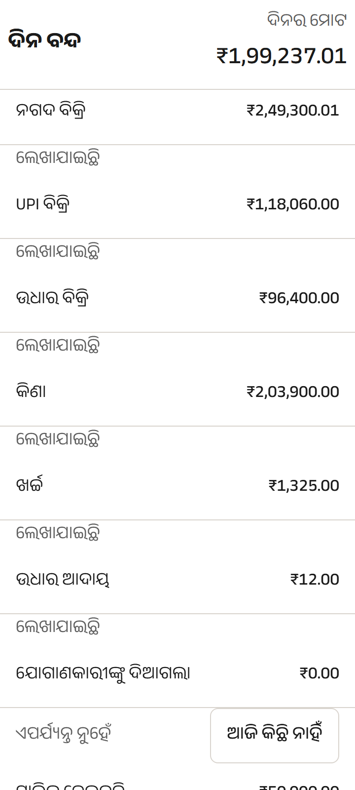
T5 Day close list - adversarial shop, Odia, Comfort
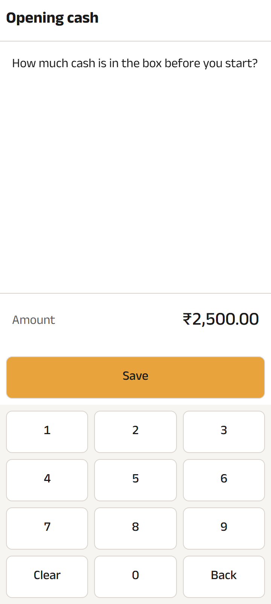
T6 Opening cash - canonical shop, English, Comfort
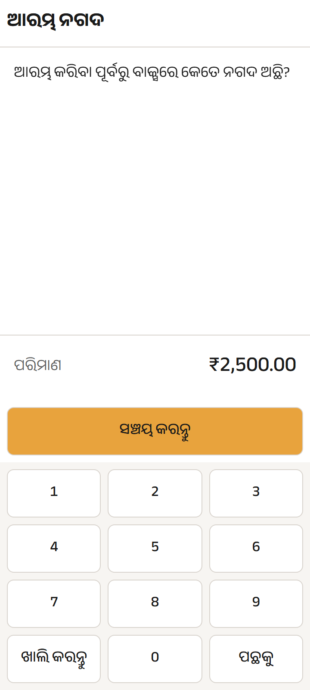
T6 Opening cash - adversarial shop, Odia, Comfort
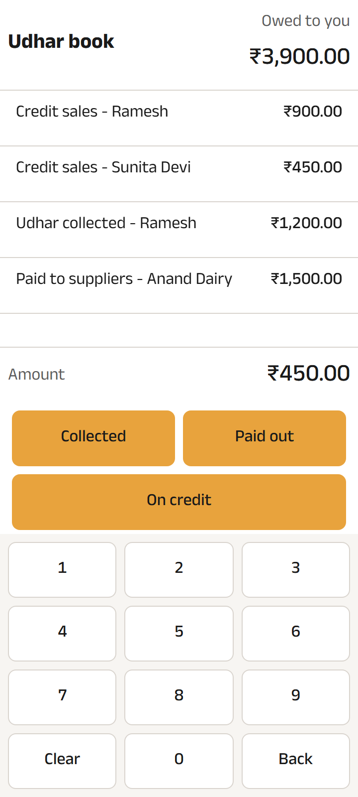
T8 Form B - party and amount - canonical shop, English, Comfort
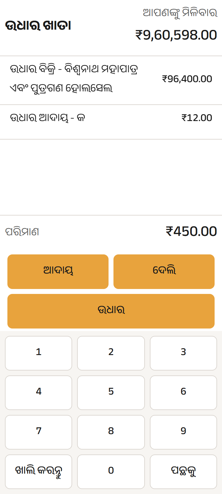
T8 Form B - party and amount - adversarial shop, Odia, Comfort
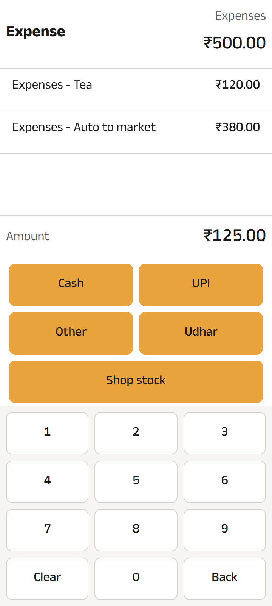
T9 Form C - expense - canonical shop, English, Comfort
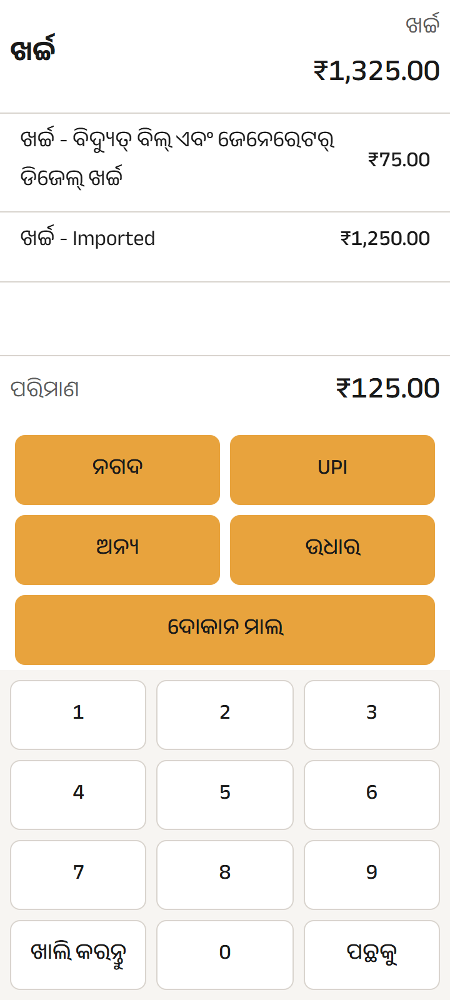
T9 Form C - expense - adversarial shop, Odia, Comfort
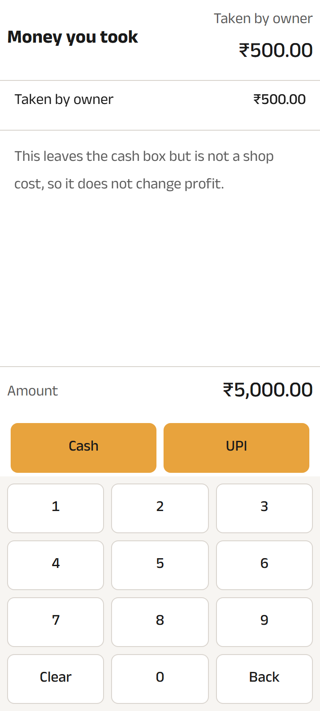
T10 Form D - money you took - canonical shop, English, Comfort
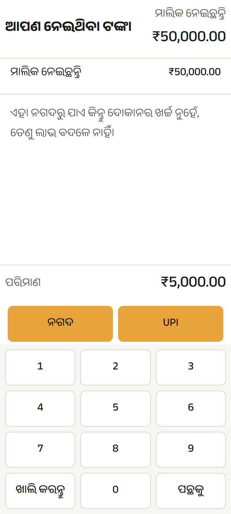
T10 Form D - money you took - adversarial shop, Odia, Comfort
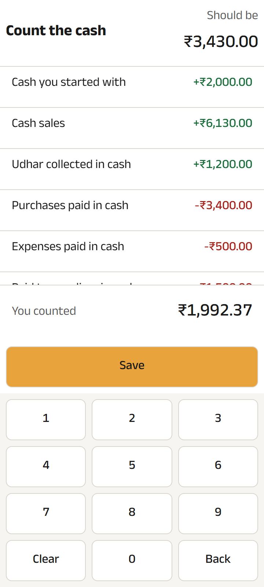
T11 Cash check - counting - canonical shop, English, Comfort
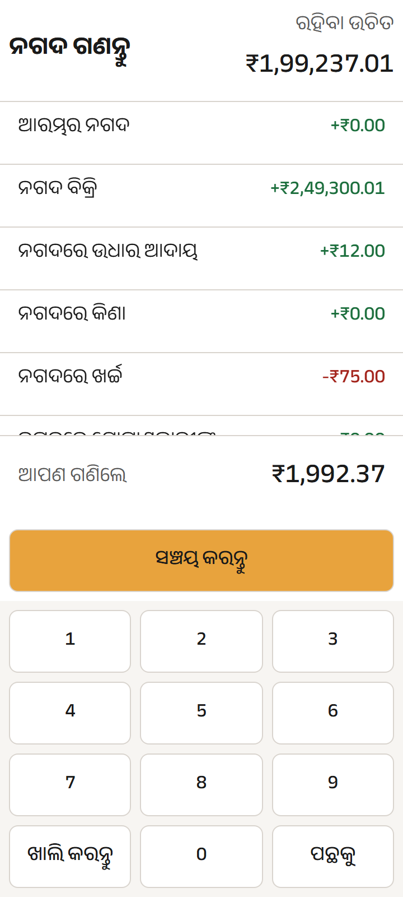
T11 Cash check - counting - adversarial shop, Odia, Comfort
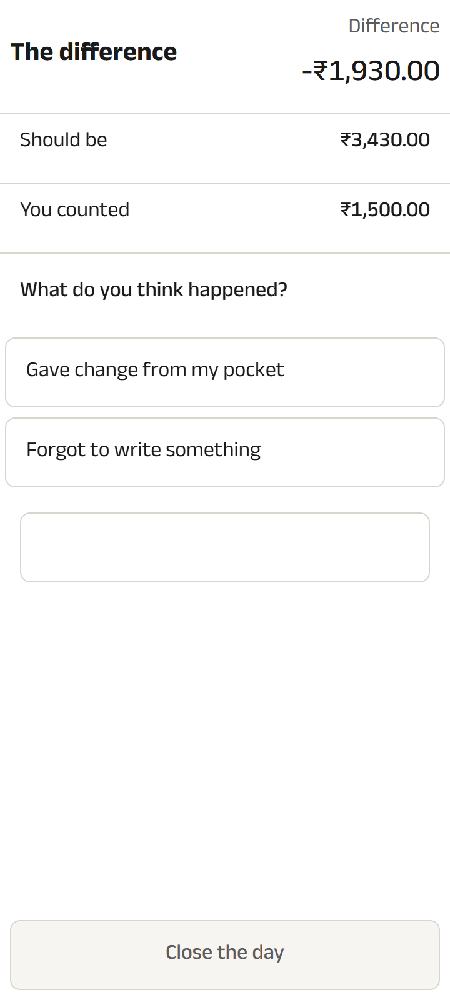
T12 Cash check - the difference - canonical shop, English, Comfort
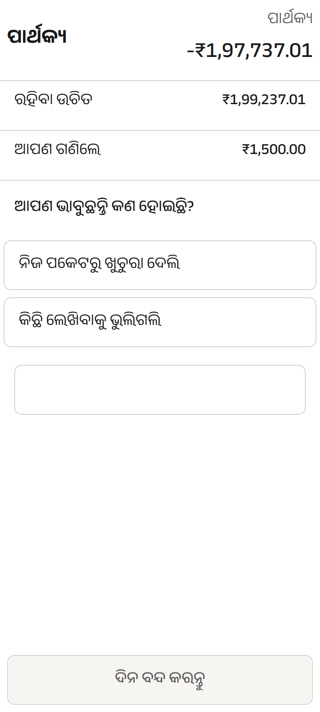
T12 Cash check - the difference - adversarial shop, Odia, Comfort
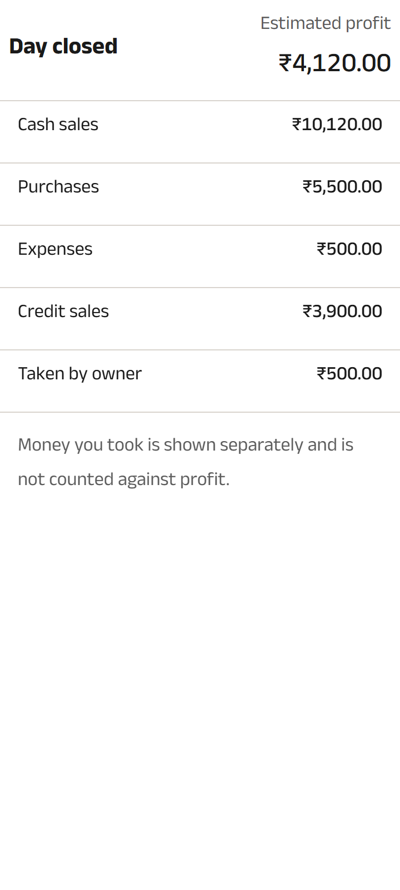
T14 Day closed - canonical shop, English, Comfort
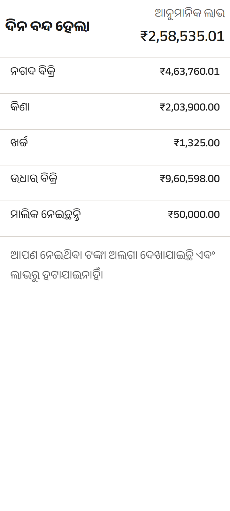
T14 Day closed - adversarial shop, Odia, Comfort
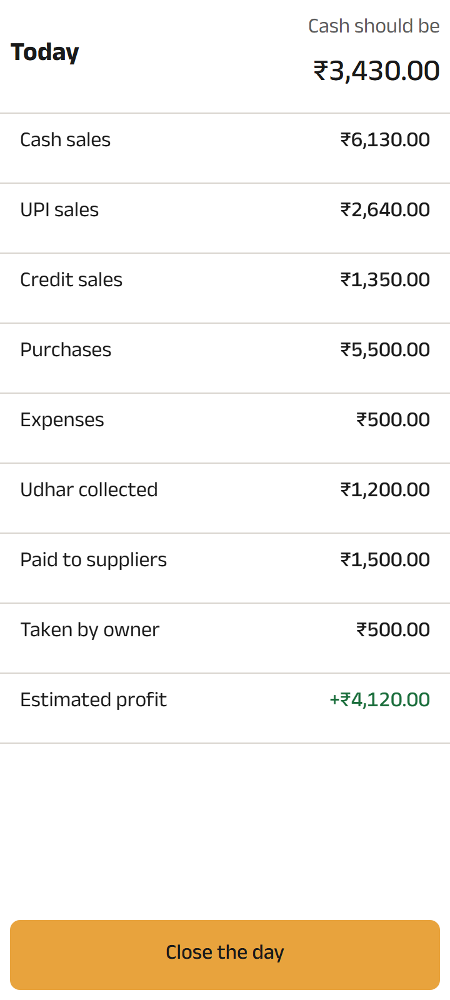
T1 Today - canonical shop, English, Comfort. The front door.
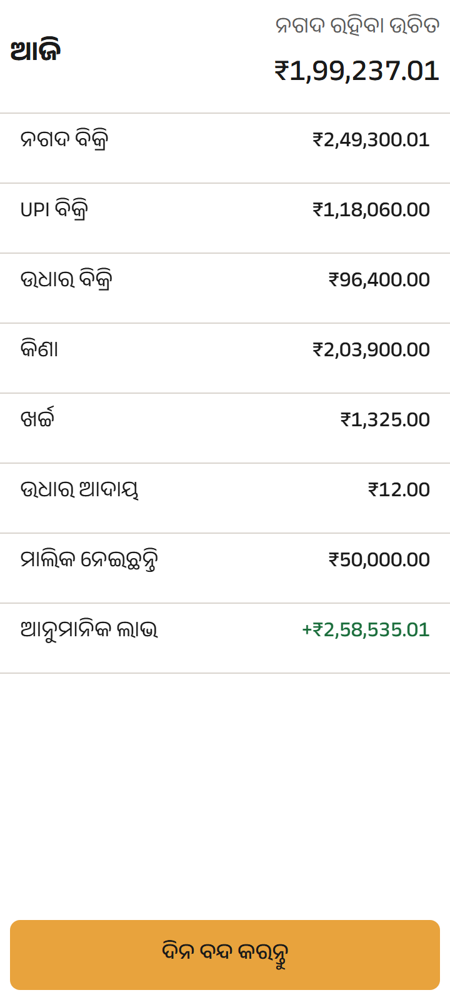
T1 Today - adversarial shop, Odia, Comfort
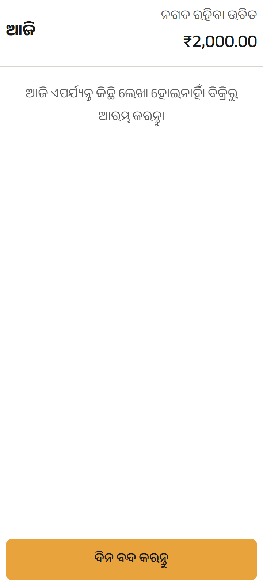
T1 Today - the first morning, before anything is entered

T7 Form A - canonical shop, English, Comfort

T7 Form A - adversarial shop, Odia, Comfort. The panel the Odia question is answered by.

T7 Form A - adversarial shop, Odia, Focus mode

T7 Form A - longest-string pseudo-locale, the layout upper bound

T7 Form A - a shop first morning, nothing entered yet

T7 Form A - the day could not be opened